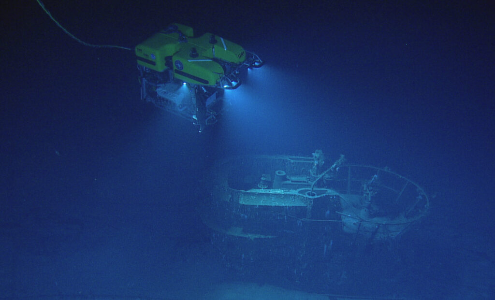
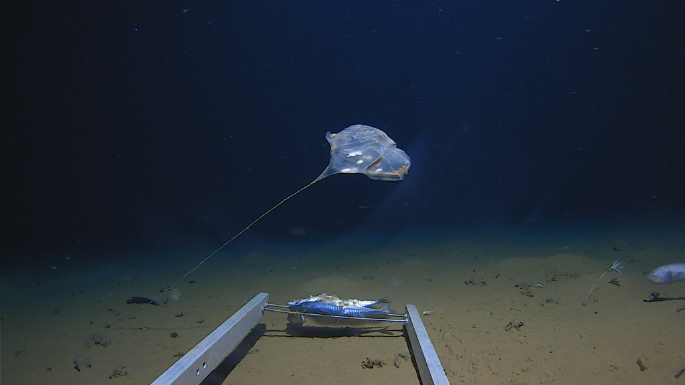
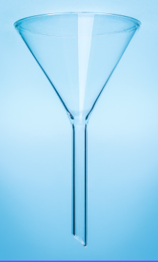
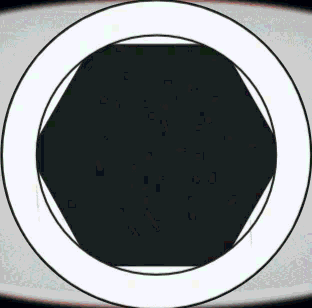
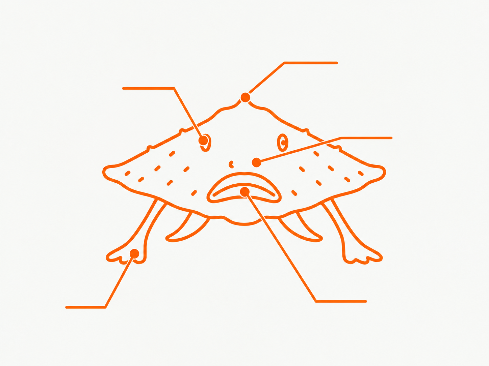
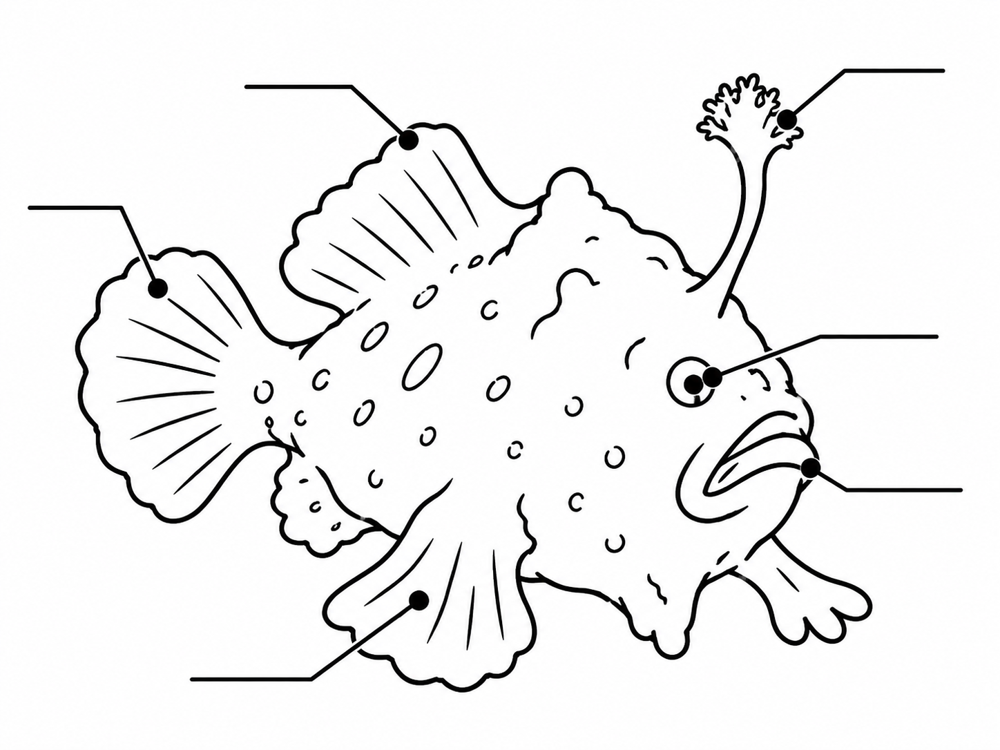

Observation A
Which reference fish best matches the underwater image?

Teacher tools
Jumping between activities changes navigation only. Reset student view clears every answer on this page.
Scientific drawings help scientists to record and communicate their observations. In this lesson, we will learn how to create a scientific drawing of a specimen.
📄
Download worksheet
Learning objective
We are learning how to create scientific drawings of specimens.
Success criteria
Think like a scientist
How to construct a scientific drawing to represent observations:
Expedition systems online
Move through each mission one stage at a time. CHECK confirms the current stage, RESET clears the current response, and NEXT advances only after the stage is complete.
Mission 01
Stage 1 of 2We know more about the surface of Mars than we do about the deepest parts of our own ocean. Scientists use specially built submarines, remotely operated vehicles and underwater cameras to explore a world of darkness, cold temperatures and crushing pressure.


Technology does not always work perfectly in the deep ocean. Cameras can fail, footage can be corrupted, and extreme pressure can damage equipment. When this happens, scientists may need other ways to record what they observed.
When you have reviewed the briefing, press CHECK.
Mission 01
Stage 2 of 2When camera footage is corrupted, the skill of scientific drawing can help preserve an observation. You will build this skill before completing the expedition.

Press CHECK when you understand why an accurate visual record matters.
Mission 02
Stage 1 of 2A scientific diagram is a drawing of an experiment set-up. Some scientific equipment has standard symbols, creating a common visual language that scientists can interpret consistently.

Press CHECK when you are ready to use scientific symbols in an experiment diagram.
Mission 02
Stage 2 of 2Which drawing is the most accurate for any scientist to interpret?
This is a structural placeholder for the final experiment photograph from the storyboard.
Mission 03
Stage 1 of 3There are some rules to follow when making a scientific drawing. Review each rule and tick it off.
Tick all five rules, then press CHECK to complete the self-assessment.
Mission 03
Stage 2 of 4A photo of one piece of equipment from the experiment is shown below. Select the matching symbol. Match all three items to continue.
Mission 03
Stage 3 of 4The metal seems to have brown residue that is making the shutter stuck.
Let's investigate why this is happening.

Press CHECK when you are ready to move on to the next mission.
Mission 03
Stage 4 of 4Look at the experiment on the left. Drag the equipment symbols into the box on the right to build a scientific diagram of it.
Mission 04 · Activity 1
Activity 1 of 4Which reference fish best matches the underwater image?
Now use the same strategy on a second image. Ignore the species name and compare the visible structures.

Choose one reference for both observations, then press CHECK.
Mission 04 · Activity 2
Activity 2 of 4A scientific drawing should show the important observable structures clearly. It is not an artwork: colour, decorative shading and unnecessary detail can make the record harder to interpret.
Choose the best scientific drawing, then press CHECK.
Mission 04 · Activity 3
Activity 3 of 4The labels are provided for you this time. Follow each leader line from the fish to its end, then drag the correct label beside that line. This is guided practice before you label the next organism independently.

../images/lesson5/red-lipped-batfish-diagram.png.
Place all five labels beside the ends of the leader lines, then press CHECK.
Mission 04 · Activity 4
Activity 4 of 4This time there is no word bank. Follow each leader line from the frogfish to a blank field and type the scientific label yourself. Use visible structures from the drawing, then press CHECK when all six labels are complete.

../images/lesson5/frogfish-diagram.png.
Label all six structures in your own words. Press ENTER or click elsewhere to save each label, then press CHECK to compare your work with an example.
Mission 05
Final applicationSonar has detected movement near the expedition vehicle. Locate a contact, observe the organism, and create a scientific record if the camera system cannot capture it.
The sonar cannot identify what is moving through the water. Choose one contact to investigate.
Once a contact is acquired, that organism stays assigned to your expedition even if the page is refreshed or the mission is reset.
Matching sonar movement with the live observation feed.
Observe the organism carefully. Try to capture a photograph for the expedition record before it moves away.
The organism swam out of range before an image could be captured. Return to the sonar to find another animal.
Writing observation frame to the expedition record.
Draw the organism from observation. Use the Science Check panel to review the same scientific-drawing rules from Mission 3.
The computer is not judging your drawing. The checklist is your self-assessment before you complete the expedition.
Mission 05
Identify the speciesThis is the image the camera recorded. Click the animal you think matches it, then press CHECK.
Expedition complete
The camera failed, but your scientific drawing preserved an observation of the organism.
Field guide match